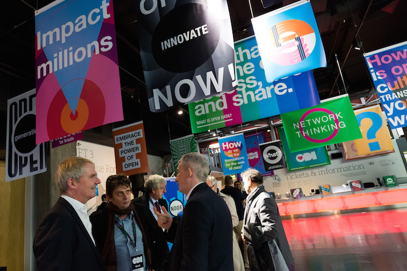

ODI Showcase supports inspiring open data projects with positive real-world impacts. Now you can support them and reach more than 15 million people in the process with ODI Showcase sponsorship

Sir Nigel Shadbolt and Gavin Starks at the ODI Summit 2015, where ODI Showcase stories were presented and shared. CC BY 2.0, uploaded by [the ODI](https://www.flickr.com/photos/ukodi/22374621497/ “the ODI").
Last year the ODI commissioned four diverse projects demonstrating how open data can be used to directly benefit individuals, organisations and society. The stories about those projects reached over 15 million people.
This year the ODI will be running two more ODI Showcases, one in spring and one in summer, and is looking for sponsorship partners.
What is ODI Showcase?
ODI Showcase aims to inspire people around the world to innovate with data by sharing the stories of how data is used and the value this brings. Each competition runs for around six months, during which the ODI:
gathers applications for potential projects, assesses their suitability and selects projects to receive a £7,000 award
works with successful projects to help refine their story, including, as necessary, help with research and analysis and with communicating the value of the project to their target audience
communicates the story into mainstream media to ensure the project has a wide impact
The 2015 ODI Showcase featured four projects, two of which have reached fruition:
Breathe Heathrow uses air quality sensors to help residents understand how the airport affects their area, bringing more data into the hands of communities to address local needs. Their research was reported in The Times and cited by the Parliamentary Environmental Audit Committee.
The Visualising Rail Disruption team built a web application, Delay Explorer, to help rail passengers to avoid delays, and performed an analysis of commuter delays into major UK cities. Their work was picked up in almost 20 media outlets, including local newspapers and ITV News, with a combined reach of almost 15 million people.
How can you sponsor the ODI Showcase?
Sponsoring the ODI Showcase provides a unique opportunity to demonstrate your support for data innovation.
This year we are offering three levels of sponsorship for the ODI Showcase:
-
Showcase partner
The competition will be referred to in all ODI communications as the ODI Showcase in partnership with XXX and successful projects will be described as supported by the ODI and XXX.
We are only accepting a single showcase partner for each call.
You may cross-publish and cross-promote all showcase content on your site.
-
Story sponsor
Providing this level of sponsorship enables us to support more projects through the ODI Showcase competition.
You can set the theme of the projects that you will sponsor and help select the successful project within that theme.
The successful project will be described as supported by the ODI and XXX through the ODI Showcase.
This sponsorship is only available prior to the call for applications for the competition.
-
Project sponsor
Providing this level of sponsorship helps support selected projects within the ODI Showcase.
You can choose which unsponsored project to support.
That project will be described as supported by the ODI and XXX through the ODI Showcase.
This sponsorship is available after projects are selected and prior to their communication.
If you are interested in sponsoring the ODI Showcase in any of these ways, please email [email protected].